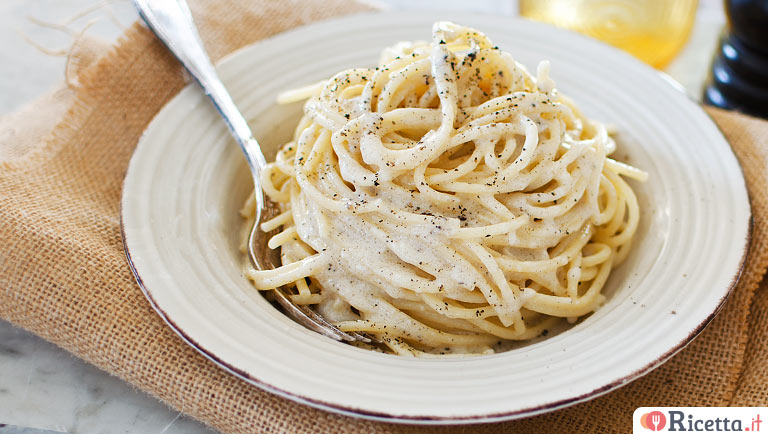
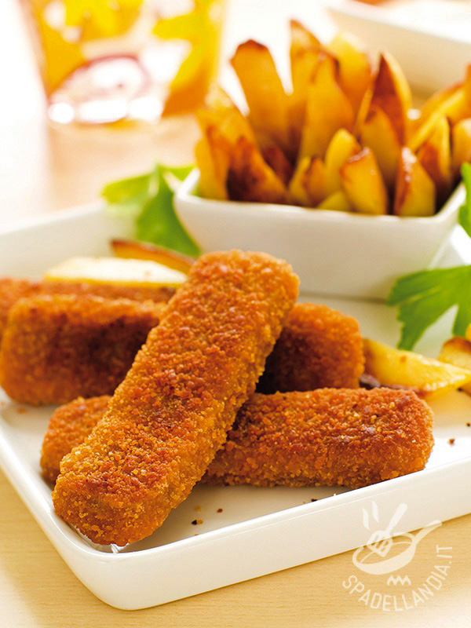

Spaghetti Cacio E Pepe
Ingredienti
- 320g di spaghetti
- 200g di pecorino romano stagionatura media, da grattuggiare
- Pepe nero in grani
- Sale fino
Procedimento
Per preparare gli spaghetti cacio e pepe, come prima cosa occupatevi di grattugiare 200g di Pecorino.
Proseguite mettendo a bollire l'acqua in un tegame (mettetene circa la meta'di quanto ne usate di solito per cuocere la pasta, cosi' sara' piu' ricca di amido) e quando bollira' potete salare a piacere.Una volta salata,potete cuocere gli spaghetti.
Nel frattempo, versate i grani di pepe interi su un tagliere, quindi schiacciateli pestando con un pestello per carne o un macinino. In questo modo si sprigionera' maggiormente il profumo pungente del pepe.
Versate meta' dose di pepe schiacciato in una padella ampia antiaderente, tostatelo a fuoco dolce mescolando con una paletta di legno, poi sfumate con paio di mestoli di acqua di cottura della pasta. Le bollicine che vedrete comparire saranno dovute all'amido contenuto nell'acqua.
Scolate quindi gli spaghetti quando saranno molto al dente (tenendo da parte l'acqua di cottura) e versateli direttamente nella padella con il pepe tostato; proseguiranno la cottura con il condimento.
Bastoncini Di Pesce
Ingredienti
- 500g di merluzzo
- 2 uova
- 150g di pangrattato
- 2 cucchiai di farina 00
- Sale fino
- Olio di semi
Procedimento
Per preparare i bastoncini di pesce iniziate tagliando grossolanamente i filetti di merluzzo, poi passateli al mixer fino ad ottenere un composto omogeneo, incorporate la farina e aggiungete una presa di sale.
Intanto preparate gli ingredienti per la doppia panatura in due ciotole capienti: in una sbattete le due uova e nell altra versate il pangrattato.
Prelevate piccole manciate di impasto e date la forma di bastoncino con le mani compattando il composto.
Una volta ottenuti i bastoncini, passateli prima nell’uovo, poi nel pan grattato e nuovamente nell’uovo e nel pangrattato ottenendo così una doppia panatura croccante.
Friggete i bastoncini di pesce in una padella con abbondante olio, quando saranno dorati scolateli e lasciateli asciugare su carta assorbente.
Braciole Di Maiale Alla Birra Ed Erbe Aromatiche

Ingredienti
- 4 braciole di maiale
- 40g olio extravergine d'oliva
- 1/2 aglio
- 2 rametti di timo
- Sale fino
- 100ml di birra rossa
- 40g di burro
- 1 rametto di rosmarino
- 1/2 scorza di limone
Procedimento
Per preparare le braciole di maiale alla birra ed erbe aromatiche iniziate pulendo e tritando l aglio, le erbe aromatiche e la buccia di limone.
Disponete le 4 braciole su un tagliere e salatele e pepatele su ogni lato.
Fate scaldare l olio in una padella e cuocete la carne 5-6 minuti per lato.
Mettete da parte le braciole, e nella stessa pentola aggiungete il burro, il trito di erbe aromatiche e la birra.
Fate rapprendere per un minuto, mescolando bene, quindi spegnete il fuoco.
Disponete le braciole nei piatti e irrorate ciascuna con la salsa alla birra. Servitele ancora fumanti.
Tiramisu'

Ingredienti
- 300g di savoiardi
- 500g di mascarpone
- 300g di caffe' della moka già pronto
- 4 uova freschissime
- 100g di zucchero
- Cacao amaro in polvere per la superficie
Procedimento
Per preparare il tiramisu' cominciate dalle uova (freschissime): quindi separate accuratamente gli albumi dai tuorli, ricordando che per montare bene gli albumi non dovranno presentare alcuna traccia di tuorlo.
Poi montate i tuorli con le fruste elettriche, versando solo meta' dose di zucchero.
Non appena il composto sara' diventato chiaro e spumoso, e con le fruste ancora in funzione, potrete aggiungere il mascarpone, poco alla volta.
Incorporato tutto il formaggio avrete ottenuto una crema densa e compatta; tenetela da parte.
Pulite molto bene le fruste e passate a montare gli albumi versando il restante zucchero un po' alla volta.
Dovrete montarli a neve ben ferma; otterrete questo risultato quando rovesciando la ciotola la massa non si muovera'.
Prendete una cucchiaiata di albumi e versatela nella ciotola con i tuorli e lo zucchero e mescolate energicamente con una spatola, cosi' stempererete il composto.
Dopodiche' procedete ad aggiungere la restante parte di albumi, poco alla alla volta mescolando molto delicatamente dal basso verso l alto.
Una volta pronto, distribuite una generosa cucchiaiata di crema sul fondo di una pirofila da 30x20cm e distribuite per bene.
Poi inzuppate per pochi istanti i savoiardi nel caffe' freddo gia' zuccherato a vostro piacimento (noi abbiamo aggiunto solo 1 cucchiaino di zucchero), prima da un lato e poi dall altro.
Man mano distribuite i savoiardi imbevuti sulla crema, tutti in un verso, cosi' da ottenere un primo strato sul quale andrete a distribuire una parte della crema al mascarpone. Anche in questo caso dovrete livellarla accuratamente cosi' da avere una superficie liscia. E continuate a distribuire i savoiardi imbevuti nel caffe', poi realizzate un altro strato di crema.
Livellate la superficie e spolverizzatela con del cacao amaro in polvere e lasciate rassodare in frigorifero per un paio d ore. Il vostro tiramisu' e' pronto per essere gustato!